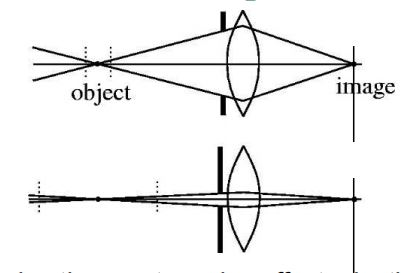
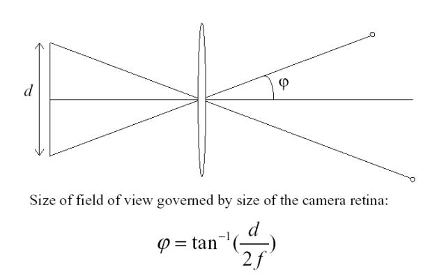
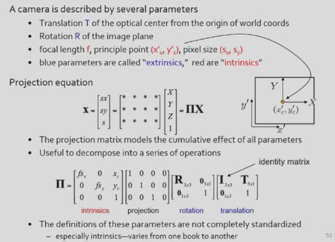
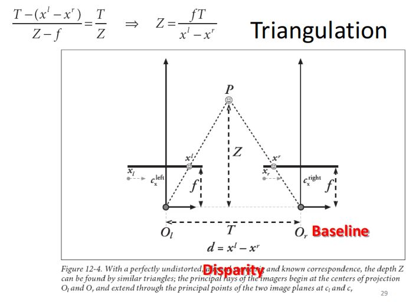

专题汇编——相机模型与立体视觉
专题——相机模型与立体视觉
专题一——运动估计
一、基本概念
1.运动估计的意义
·追踪物体的行为
·矫正相机抖动，增加稳定性
·图像对齐
·三维形状重建
·实现特殊效果
2.运动估计的方法
·进行运动估计，即解决correspondence问题，即给定图像\(H\)中的一个像素点，寻找图像\(I\)中的对应像素，形成匹配。
3.【考点】运动估计的三个假设
（1）亮度恒常性(brightness constancy)：同一个物点，在不同帧上的亮度应相同，即\(I(x + u, y + v, t + 1) = H(x, y, t)\)。
（2）空间一致性(spatial coherence)：属于同一表面的邻近点应具有较为相似的运动。
（3）微小运动(small motion)：相邻两帧之间的运动较小。
二、光流问题
1.已知条件
相邻时刻点的两张图像\(H(x, y, t)\)和\(I(x, y, t + 1)\)
2.运动估计——光流方程\(I_x u + I_y v = -I_t\)推导
·由微小运动条件：
\(I(x + u, y + v) = I(x, y) + \frac{\partial I}{\partial x}u + \frac{\partial I}{\partial y}v + O(u^2) + O(v^2)\)
·舍弃高阶项，得到：
\(I(x + u, y + v) \approx I(x, y) + \frac{\partial I}{\partial x}u + \frac{\partial I}{\partial y}v\)
·由亮度恒常性：\(0 = I(x + u, y + v) - H(x, y) \approx I(x, y) + I_x u + I_yv - H(x, y) = I_t + \nabla I \cdot[\frac{\partial I}{\partial x}, \frac{\partial I}{\partial y}]\)
即：\(I_xu + I_yv = -I_t\)
专题二——单目视觉与相机模型
一、单目投影
1.单目投影的任意性
2.单目投影带来的信息损失：角度、距离（长度）
3.Muller-Lyer错觉
二、相机模型
1.结构：镜片、光栅、胶卷、取景框。
2.建立真实相机——小孔成像（pinhole camera）
（1）光线直接到达胶片，由于光线散射，没有聚焦，因此没有画面，全为白色。
（2）小孔成像：第一个相机
·添加挡板，挡板中有小孔。光线经过挡板，投射在胶片上，则光线模糊的问题得以缓解，成倒立的实像。
·挡板到胶片的距离称为焦距(focal length)。
·光圈孔径(aperture，即挡板中小孔的直径)对成像的清晰度有影响。光圈孔径太大，成像不清晰；光圈孔径太小，光线入射不足，并且有衍射问题发生。
（3）镜片
·作用：折射平行光线，使之聚焦于一点，克服光线不足造成的问题；镜片厚度决定焦距，焦距决定最佳成像平面的位置。
（4）薄透镜公式
\(\frac{1}{d_o} + \frac{1}{d_i} = \frac{1}{f}\)
二、景深(Depth of Field)
1.定义：摄像机镜头能够获取清晰图像时，被拍摄物体到摄像机镜头的最近距离、最远距离之间的距离范围。
2.景深的决定因素：焦距、光圈大小。
3.【考点】光圈大小对景深的影响

（1）结论：光圈越小，景深越大。
（2）原理解释——容许弥散圆(permission circle of confusion)
·弥散圆定义：物点成像时，由于成像平面与焦点不重合，导致该点的成像光束不能会聚于一点，而是在像平面上形成一个扩散的圆形投影。
·容许弥散圆：半径小于某个临界值，不对成像清晰度带来明显影响的弥散圆称为容许弥散圆。
·物体前后移动相同的距离，若光圈越小，则弥散圆半径的变化量越小。因此，在弥散圆半径达到容许临界值时，更小的光圈对应的景深更大。
[注]光圈较小，会导致入射光不足，需要补充曝光。
4.焦距对景深的影响：焦距越大，景深越小。
三、视场(Field of View)
1.【考点】焦距(Focal Length)对视场的影响

（1）结论：焦距越大，视场越小。
（2）原理解释
·视角\(\phi = tan^{-1}\frac{d}{2f}\)，在\(d\)固定时，焦距越大，视角越小，视场越小。
2.光的弥散
（1）弥散圆定义：物点成像时，由于成像平面与焦点不重合，导致该点的成像光束不能会聚于一点，而是在像平面上形成一个扩散的圆形投影。
（2）容许弥散圆：半径小于某个临界值，不对成像清晰度带来明显影响的弥散圆称为容许弥散圆。
3.色差(chromatic aberration)：透镜无法将各种波长的色光都聚焦在同一点上的现象，由镜头散射现象造成。
四、投影
1.针孔相机模型
（1）投影公式：\(-\frac{x}{f} = \frac{X}{Z}\Rightarrow x = -f\frac{X}{Z} + c_x\)，其中\(c_x\)表示漂移。
（2）\(x, y\)两个方向的投影公式
\(x_{screen} = f_x\frac{Y}{Z} + c_x\)
\(y_{screen} = f_y\frac{X}{Z} + c_y\)
【理解】
①对焦距\(f\)在\(x, y\)方向上分别表示。
②\(f_x, f_y\)以像素点为单位，转换如下：
\(f_x = Fs_x, f_y = Fs_y\)
其中\(F\)是焦距，\(s_x, s_y\)分别表示在\(x,y\)方向上的像素点个数，单位是\(pixel/mm\)。
（3）相机内参：由漂移、以像素为单位的焦距构成，即\((f_x, f_y, x, y)\)。
2.成像与原物的尺寸放缩关系：令\(x = \frac{X}{Z}, y = \frac{Y}{Z}\)，则有\(x_{screen} = f_xx + c_x, y_{screen} = f_yy + c_y\)。
3.【考点】齐次坐标与投影公式
（1）非齐次坐标与齐次坐标之间的转换
[例1]将下列非齐次坐标转换到齐次坐标。
①非齐次坐标\((x, y)\Leftrightarrow\)齐次坐标\([x, y, 1]^T\)
②非齐次坐标\((x, y, z)\Leftrightarrow\)齐次坐标\([x, y, z, 1]^T\)
③非齐次坐标\((\frac{x}{w}, \frac{y}{w})\Leftrightarrow\)齐次坐标\([x, y, w]^T\)
④非齐次坐标\((\frac{x}{w}, \frac{y}{w}, \frac{z}{w})\Leftrightarrow\)齐次坐标\([x, y, z, w]^T\)
（2）投影公式：\(q = MQ\)
·\(q = \begin{bmatrix}x\\y\\w\end{bmatrix}, M = \begin{bmatrix}f_x \ 0 \ c_x \\ 0 \ f_y \ c_y \\ 0 \ \ 0 \ \ 1\end{bmatrix}, Q = \begin{bmatrix}X \\ Y \\ Z\end{bmatrix}\)
·转换矩阵\(M\)包含了相机内参\((f_x, f_y, c_x, c_y)\)。
五、透镜的畸变
1.透镜的径向畸变
（1）分类：枕形畸变（pin-cushion distortion，向内挤压）、桶形畸变（Barrel，向外突出）
（2）穿过棱镜边缘的光线，产生的径向畸变最为明显。
（3）径向畸变的去除
\(x_{corrected} = x(1 + k_1r^2 + k_2r^4 + k_3r^6)\)
\(y_{corrected} = y(1 + k_1r^2 + k_2r^4 + k_3r^6)\)
其中，\(r\)表示当前像素点到成像平面中心的距离。
2.透镜的切向畸变
（1）原因：装配时的误差，导致成像平面(CCD)与透镜不平行。
（2）切向畸变的去除
\(x_{corrected} = x + [2p_1y + p_2(r^2 + 2x^2)]\)
\(y_{corrected} = y + [p_1(r^2 + 2y^2) + 2p_2x]\)
3.畸变参数
\((k_1, k_2, k_3, p_1, p_2)\)，前三者出现于径向畸变校正公式，后两者出现于切向畸变校正公式。
六、齐次坐标与投影公式
1.投影公式
\(q = MQ\)
\(q = \begin{bmatrix}x\\y\\w\end{bmatrix}, M = \begin{bmatrix}f_x \ 0 \ c_x \\ 0 \ f_y \ c_y \\ 0 \ \ 0 \ \ 1\end{bmatrix}, Q = \begin{bmatrix}X \\ Y \\ Z\end{bmatrix}\)
2.三维空间旋转公式
（1）非齐次旋转公式
用\(R = R_z(\theta)R_y(\phi) R_x(\psi)\)表示对\(x, y, z\)三个方向进行旋转，并叠加后产生的结果。
\(R_x(\psi) = \begin{bmatrix}1 \ \ \ \ \ \ \ 0 \ \ \ \ \ \ \ 0 \\
0 \ cos\psi \ sin\psi \\
0 \ -sin\psi \ cos\psi \end{bmatrix}\)
\(R_y(\phi) = \begin{bmatrix}cos\phi \ 0\ -sin\phi \\
0 \ \ \ \ \ \ \ \ 1 \ \ \ \ \ \ \ \ 0 \\
-sin\psi \ 0 \ cos\phi \end{bmatrix}\)
\(R_z(\theta) = \begin{bmatrix}
cos\theta \ sin\theta \ 0 \\
-sin\theta \ cos\theta \ 0 \\
0 \ \ \ \ \ \ \ 0 \ \ \ \ \ \ \ 1 \\\end{bmatrix}\)
（2）齐次旋转公式
令\(t_{3 \times 1} = (t_x, t_y, t_z)^T\)表示位移，则：
\(P' = \begin{bmatrix} R_{3 \times 3} \ t_{3 \times 1}\\ 0 \ 0 \ 0 \ 1\end{bmatrix}\)
3.物体及其成像的旋转
（1）位移\(T = O_w - C_w\)，其中\(O_w\)表示物体坐标系的原点，\(C_w\)表示相机坐标系的原点；用\(Q_w, Q_{cam}\)分别表示物体在物体坐标系、相机坐标系中的位置坐标。
（2）先平移，再旋转，从物体坐标系到相机坐标系的坐标变换公式为：
\(Q_{cam} = R(O_w - C_w)\)
代入\(C_w = O_w - T\)，有：
\(Q_{cam} = R(Q_w - O_w + T)\)
其中，\(Q_w - O_w = Q_{obj}\)是物体在物体坐标系中的坐标。
\(Q_{obj} = R^tQ_{cam} - T\)
其中，\(R^t = R^{-1}\)。
4.相机的外参
\((\theta , \phi, \psi, t_x, t_y, t_z)\)，分别表示三个方向的旋转角度、三个方向的位移，随着环境的变化而变化。
七、成像过程总结
1.先利用外参矩阵，对物体进行平移、旋转变换：\(Q_{cam} = M_{ext}Q_{obj}\)
2.再利用内参矩阵，对平移、旋转后的物体进行投影，得到图像：\(Q_{image} = M_{int}Q_{cam}\)
3.成像过程涉及的坐标系：三维物体坐标系（\(\rightarrow\)三维世界坐标系）\(\rightarrow\)三维相机坐标系\(\rightarrow\)二维图像平面坐标系\(\rightarrow\)二维像素坐标系
[注]二维图像平面坐标系是理想模型，二维像素坐标系不是理想模型。
4.总结

[注]注意到projection矩阵，它对应的是三维空间齐次坐标到二维空间齐次坐标的转换。
专题三——相机标定
一、基本概念
1.相机标定的定义：计算像素点和空间中光线的关系。
2.相机标定的作用：
（1）重构世界模型（Virtual Earth Project）
（2）与世界进行交互（机器人）
二、相机标定问题
1.相机标定问题
给定\(N\)对由环境点、图像点组成的点对，恢复相机的参数（畸变参数\((k_1, k_2, k_3, p_1, p_2)\)、内参\((f_x, f_y, c_x, c_y)\)、外参\((\theta , \phi, \psi, t_x, t_y, t_z)\)）
2.相机标定方法一——自定标
（1）基本思想
·无需使用标定物体
·只需让相机在静态场景中移动，利用场景的刚性恢复内参。
·风景、成像图片之间的联系足以恢复内参、外参。
（2）特点
灵活，但不可靠。由于需要估计很多参数，自定标方法不总能产生可靠的结果。
3.相机标定方法二——基于三维参照物的定标
（1）基本思想
·使用相机观察一个参照物，该参照物在三维空间中的坐标是已知的。
·参照物一般包含两个或三个互相垂直的平面。
（2）优缺点
·优点：高效完成。
·缺点：参照物制作、环境布置等要求较高。
4.相机标定方法三——基于单应性(Homography)的平面标定
（1）特点：灵活、健壮、低成本。
（2）基本思想：只需相机对平面pattern至少在2个不同方向拍照，即可完成定标。
三、相机标定方法
1.相机标定流程
·寻找图像角点。
·根据图像角点、实际角点坐标，建立图像坐标和真实世界坐标的方程组。
·解方程组，获得对内参、外参和畸变参数的估计。
2.利用棋盘格进行标定
3.Homography
（1）定义
·三维物体点坐标\(\tilde{Q}\)、图像中的点坐标\(\tilde{q}\)的转换关系为：\(\tilde{q} = sM_{int}M_{ext}\tilde{Q}\)，表示依次对\(\tilde{Q}\)进行外参变换、内参变换和缩放变换。
·由于定标物体是平板，因此\(\tilde{Q} = [X, Y, 0, 1]^T\)
·从而\(\tilde{q} = sM_{int}[r_1 \ r_2 \ r_3 \ \vec{t}]\begin{bmatrix}X \\ Y \\ 0 \\ 1 \end{bmatrix} = sM_{int}[r_1 \ r_2 \ \vec{t}]\begin{bmatrix}X \\ Y \\ 1 \end{bmatrix}\)
（2）Homography对原平面坐标、目标平面坐标的联系
·坐标转换：\(p_{dst} = Hp_{src}, p_{src} = H^{-1}p_{dst}\)
·齐次坐标：
\(p_{dst} = [x_{dst} \ y_{dst} \ 1]^T, p_{src} = [x_{src} \ y_{src} \ 1]\)
（3）矩阵\(H\)的系数求解
·由于单应性矩阵\(H\)满足\(H_{33} = 1\)，故自由度为\(8\)。
·由于每个点可以分别在\(x, y\)方向提供一个等式，因此最少只需\(4\)个点，即可算出\(H\)矩阵。
（4）畸变参数（二维几何）计算
·\(3\)个点可以获得\(6\)个约束条件，足以估计\(5\)个参数的值。
·利用更多点进行估计，可以获得更为精确的结果。
（5）内参+外参（三维几何）计算
·受到单应性矩阵\(H\)的自由度限制，一个视野至多只能算出\(8\)个参数。
·因此，需要更多的不同视野，以计算内参、外参。
·视野发生变化，则外参会发生变化，增加\(6\)个外参未知数。
·\(2NK \ge 6K + 4\)，其中\(N\)为角点个数，\(K\)为视野个数。
·使用更多的角点、视野，可以增强结果的健壮性。
4.应用——形成鸟瞰图
·计算单应性矩阵\(\rightarrow\)通过对倾斜俯视图的视角变换，形成垂直俯视的鸟瞰图。
专题四——双目视觉
一、立体成像(stereo imaging)
1.立体
（1）立体：通过视觉感知(opsis)获得的实体感(solidity)，根据对真实世界的两个略有不同的投影，获得对深度的感知。
（2）计算机：使用两个摄像头实现立体视觉。
2.深度信息的恢复
·根据两张图片、三角化方法，可以恢复深度信息。
3.立体成像的作用
（1）对于自动化领域十分重要，应用有机器人、遥感等。
（2）物体重构在增强现实等领域较为流行。
4.立体视觉实现的四个步骤
（1）去除畸变(Undistortion)
（2）校准(Rectification)：通过调整相机拍到的画面，使得两个相机的图像实现行对齐(row-aligned)。
（3）对应(Correspondence)：建立两幅图像的像素点对应关系，计算视差(disparity)。
（4）反投影(reprojection)与三角化(triangulation)，获得depth map。
·三角化：假设有两个相机（焦距相同、图像无畸变、光轴平行、距离已知），则某一个三维空间中的点在两张图片上都有位置，可以利用相似原理，计算两张图片的深度信息。
二、三角化(triangulation)
1.关于两个相机的假设
·焦距相同
·图像去畸变
·行对齐
·两个相机光学中心简单的距离已得到测量
2.已知条件：点在三维空间中的坐标和在二维图像上的坐标。
3.三角化

（1）参数的含义
\(d = x^l - x^r\)表示同一点\(P\)在两个相机的成像平面分别成像所得像点的视差(disparity)。
（2）公式推导与理解
·根据相似性原理：\(\frac{Z - f}{T - (x^l - x^r)} = \frac{T}{Z}\)
从而得到物体到相机成像平面的深度值\(Z = \frac{fT}{x^l - x^r}\)
·理解：点\(P\)离成像平面越远，视差越大，导致\(Z = \frac{fT}{x^l - x^r}\)的数值变小，对深度的分辨率越低。
·提高两个相机的距离\(T\)，可以提高对深度的分辨率。
三、极线几何(epipolar geometry)
1.基本概念
·空间中物体点\(x\)和两个成像中心\(C, C'\)形成的平面\(\pi\)，称为极平面。
·两个成像中心的连线称为基线。
·基线越长，深度分辨率越高、越精准。
·极平面与两个成像平面分别形成一条交线。
2.特点
两个相机拍摄同一个场景时，场景的某一行必定在两个成像平面上存在行与行之间的一一对应关系。
3.极点与极线的定义

（1）极点：基线(baseline)与两个成像平面的交点\(e, e'\)，称为极点。
（2）极平面：包含基线(baseline)的平面称为极平面。
（3）极线：极平面与成像平面的交线，称为极线。
（4）目的
·给定一张图中一点，则它在另一张图中的匹配点必定处于相应的极线上。
·一张图的某些像素点在另一张图的对应像素点（correspondence）的搜索只需在行中进行，而不需要进行二维搜索，从而将搜索空间从二维降低到一维。
4.计算视差(disparity)
（1）步骤：特征点寻找\(\rightarrow\)特征点匹配
（2）若在极线上，针对左图的每一个像素点，对右图相应极线上没一点计算最小匹配开销，该方法效果差。
（3）改进方法：窗口匹配。
5.correspondence匹配方法
（1）局部匹配：块匹配、基于梯度的优化、特征匹配。
（2）全局匹配：动态规划、本征曲线、图分割、非线性扩散、置信度转播、非对应性方法等。
四、双目视觉的应用
1.3D眼镜：红蓝眼镜、偏振眼镜，利用两只眼镜看到的景象不一样的事实。
2.距离成像技术(Range Imaging)
·直接测量场景中每点到相机的距离，并使用二维数组记录。
·分类：结构光系统、TOF(Time of Fly System)技术。
专题五——结构光成像技术
一、基本概念
1.组成部分：投影仪、相机、深度恢复系统。
2.结构光成像基本思想：投影仪对光离散化并打到物体上，形成明暗变化的光带/散点。拍照后，深度恢复系统利用图像的明暗变化，恢复图像的三维信息。
二、结构光成像原理
1.问题描述
已知成像坐标\((x', y')\)、投影角度\(\theta\)、投影仪与镜头的距离\(b\)、相机焦距\(f\)，求：物体的真实三维坐标\((x, y, z)\)。
2.真实三维坐标求解

过扫描对象向\(x\)轴作垂线，利用相似三角形原理（大三角形由投影仪、扫描对象、相机组成），有：
\([x \ y \ z] = \frac{b}{fcot\theta -x'}[x' \ y' \ f]\)
三、结构光的编码
1.基本思想：逐点扫描速度太慢，希望使用基于条带的编码，以加速操作。
2.位码：对光带进行二进制编号，从低位向高位数，第\(n\)位为\(1\)的光带统称为位码为\(n\)的光带。
四、结构光成像技术的优缺点
1.优点：成本低，速度快。
2.缺点：成像粗糙，需要后续处理。
五、迭代最近点(ICP, Iterative Closest Point)算法
1.问题描述
·单个摄像机构造的结构光系统只能获得一个方向上的三维数据，如果希望得到大于\(180\deg\)范围的三维数据，就需要采用多个投影仪-摄像机组合。
·此时，需要研究如何把多个扫描结果拼接在一起，以形成对扫描对象的完整描述。
2.迭代最近点(ICP, Iterative Closest Point)方法
（1）建立两个扫描结果之间点的对应关系。
（2）通过迭代，获得一个仿射变换函数，以描述第（1）步中对应点之间的变换关系。
（3）对扫描结果上的所有点，应用（2）中得到的仿射变换函数。
（4）选取两个扫描结果中距离最近的点作为对应点，计算对应点的距离。如果距离大于设定阈值，则继续执行（2）（3）；否则结束。
六、拓展
1.Time of Fly系统：利用光速恒定、激光定向性能非常好的性质，通过一个装置向扫描对象的任意一点发射激光，同时接受来自该点的反射，记录两者之间的时间差，即可算出激光器与目标点的距离，从而完成测距，获得三维数据。
2.Cyberware：激光测距，使用Time of Fly的原理。
3.Shape from X：通过视频或图像，间接对场景进行三维重建。